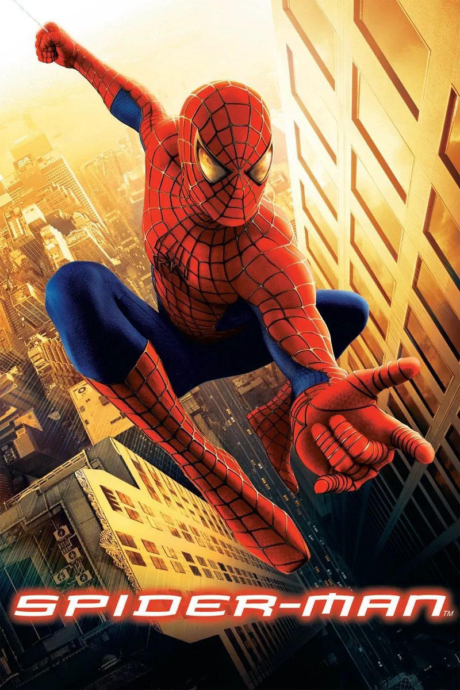
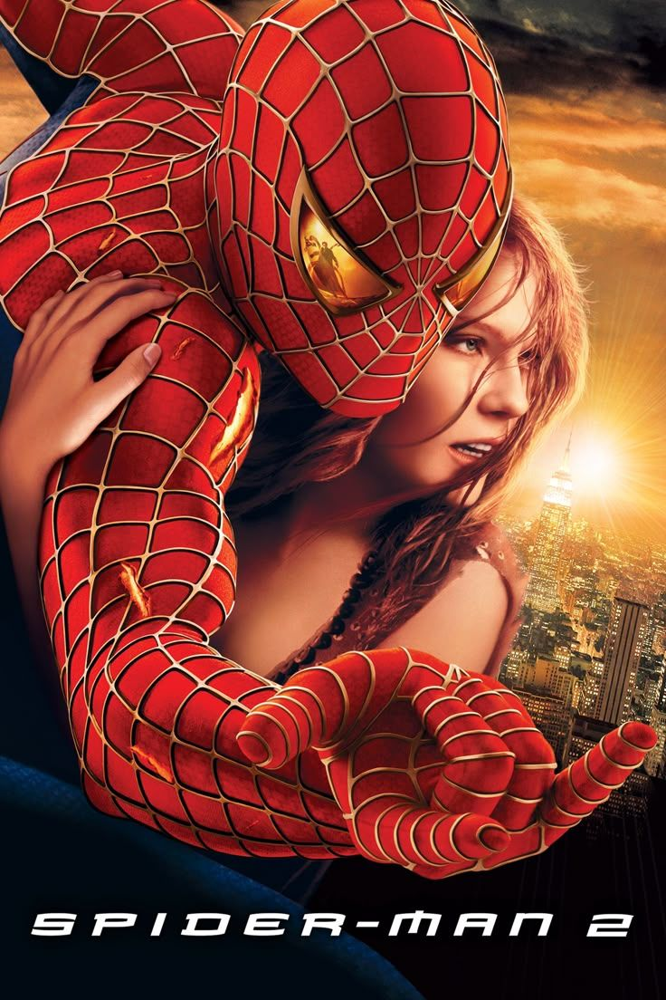
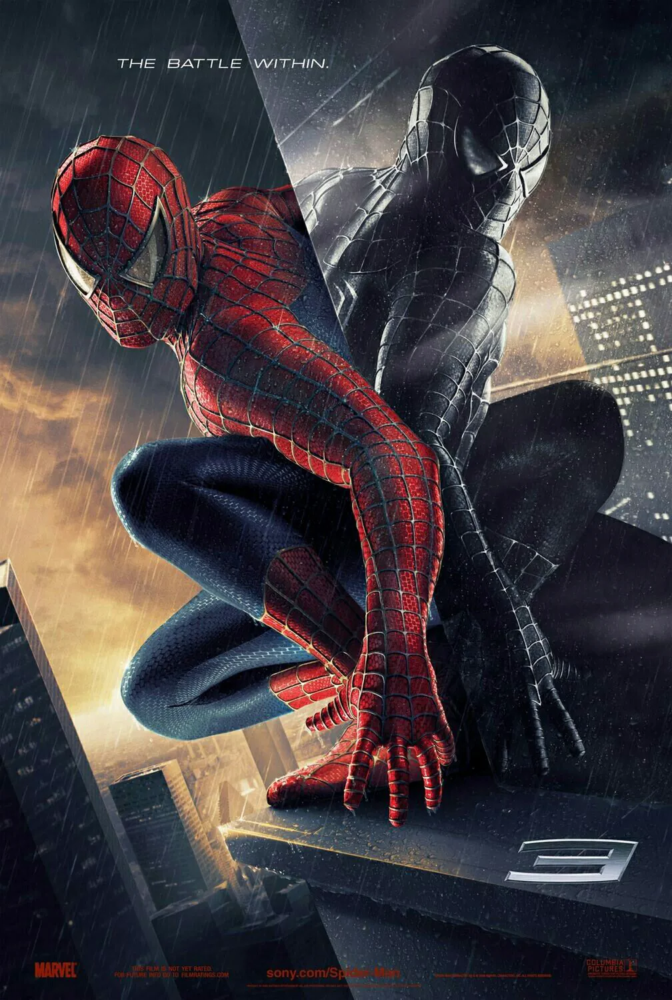

Top 5 Facts About Spider-Man
-
His Real Name Is Peter Parker

Spider-Man is one of the most famous superheroes in the Marvel universe. His real name is Peter Parker. He is a smart and kind young man who tries to balance school, work, friendships, and his life as a superhero.
-
He Got His Powers From a Spider Bite

Peter Parker gained his powers after being bitten by a radioactive spider. After the bite, he became stronger, faster, and able to climb walls. He also developed a special spider-sense that warns him of danger.
-
He Can Swing Through the City

One of Spider-Man's most popular abilities is web-swinging. He uses his web-shooters to swing between buildings and move quickly through New York City.
-
He Is a Relatable Hero
Spider-Man is loved by many people because he has normal problems too. He worries about school, money, family, and responsibility. Even with these problems, he still chooses to help others.
-
He Has Many Famous Enemies
Spider-Man has fought many famous villains, such as Green Goblin, Doctor Octopus, Venom, Sandman, and the Lizard. These enemies make his stories exciting and challenging.
Source: Marvel - Spider-Man